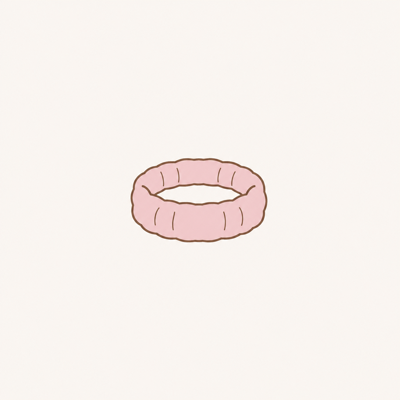
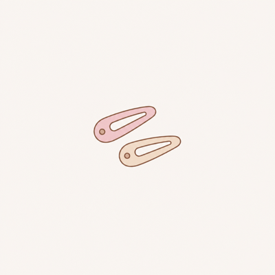
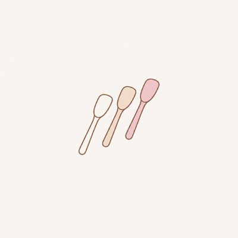
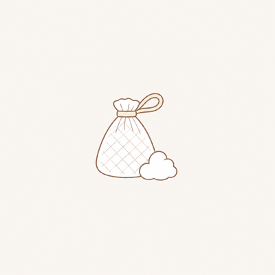
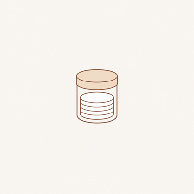
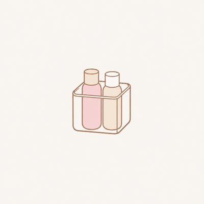
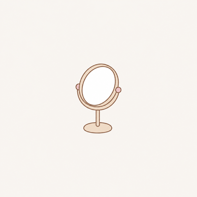
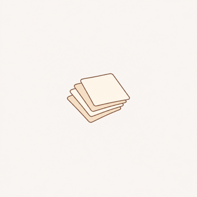

スキンケアを続けられなかった理由のひとつが、全部ちゃんとしようとしたことでした。今は線を引いています。
化粧水、乳液、日焼け止め、クレンジング
ヘアバンド、ネット、ケース、鏡
肌につかないか、使い捨てか、毎回洗えるもの。

顔につくのは髪の生え際だけ。洗えるので、違いが出にくいところでした。

洗顔のとき前髪を留めるだけ。肌につきません。

クリームを指で取るのをやめました。容器に指を入れずに済むので、むしろこっちのほうが清潔です。毎回洗えます。

洗顔料を泡立てるだけの道具です。手で作るより早く終わります。乾かして使う前提で。

中身に触れるだけで、肌にはつきません。見えるところに置いておくと、ちゃんと使います。

中身が見えれば役目は終わりです。透明なものにしています。

映れば充分でした。

肌につきますが、使い捨てです。だから気にしていません。
安いからやめる、ではなくて、選び方を変えているところです。
化粧品を別の容器に移すことを、メーカーはすすめていません。資生堂は「洗った容器が完全に乾燥しないと、残った水の影響で菌などが繁殖し、品質を保てなくなることがあります」と書いています。普段は入れ替えないことにしました。
肌に毎日当たる道具です。洗って使い続けるより、安いものを早めに替えるほうが、自分には楽でした。
当たりが気になるので、ここだけは値段で決めていません。
ケースそのものは100均のものです。ただ、中に入れるのは試供品で、本体から移し替えることはしていません。
ここは全部、メーカーが書いていることです。
肌に触れる物だけ、楽天で選んでいます。道具のリンクは置いていません。100均で買えるものなので。
広告（アフィリエイトリンク）です。押しても料金はかかりません。
楽天ROOM 化粧水・乳液・クレンジング・日やけ止めなど21件。使っているものと、気になっているものを分けて置いています 楽天ROOMのページはここ →